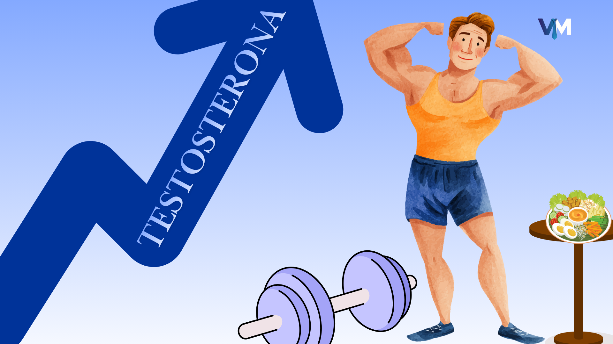
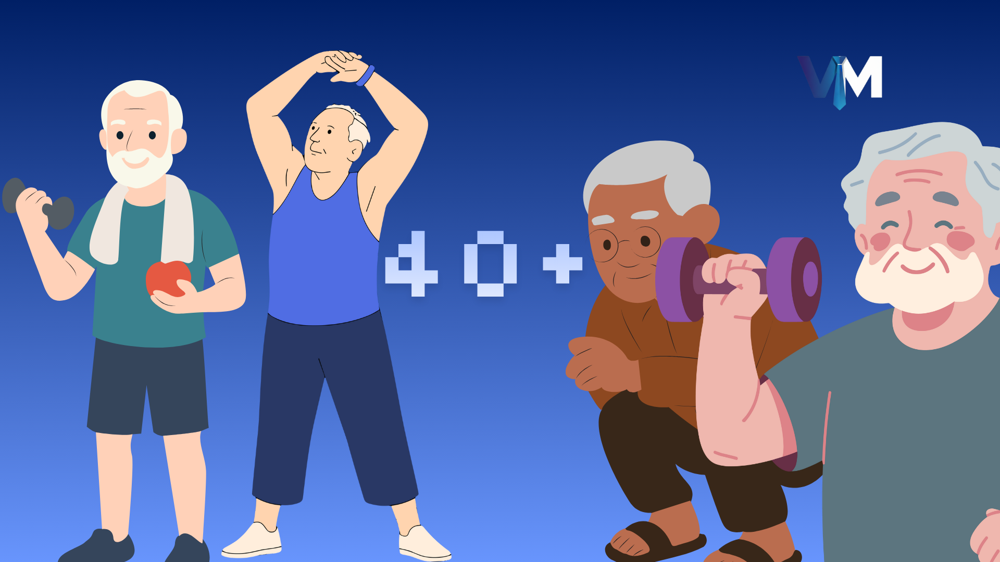
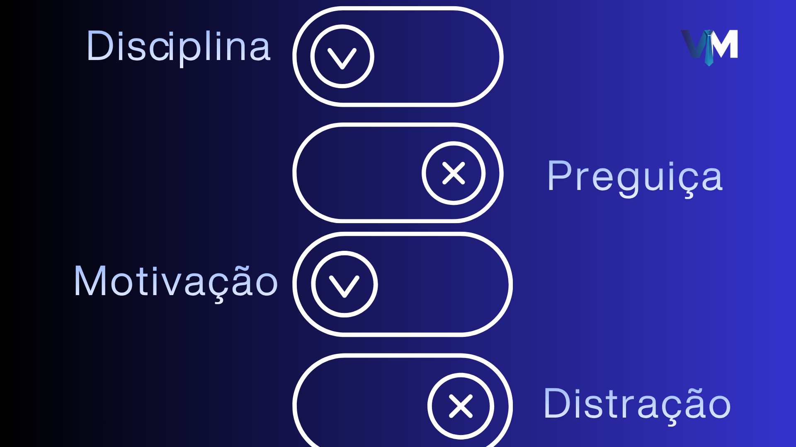

Os 5 Melhores Exercícios de Mobilidade para Fazer Pela Manhã
Comece seu dia com mais energia e menos dores. Estes exercícios rápidos vão transformar suas manhãs.

Comece seu dia com mais energia e menos dores. Estes exercícios rápidos vão transformar suas manhãs.

Analisamos os prós e contras do jejum intermitente e como ele pode impactar sua testosterona e bem-estar.
Ferramentas rápidas de respiração e foco para manter a mente clara sob pressão.

Guia de suplementos e rotinas que comprovadamente ajudam a manter os níveis hormonais ideais.

A importância de manter a massa muscular e densidade óssea após os 40 anos.

Como as pessoas mais bem-sucedidas do mundo começam o dia para alcançar o máximo de Foco.